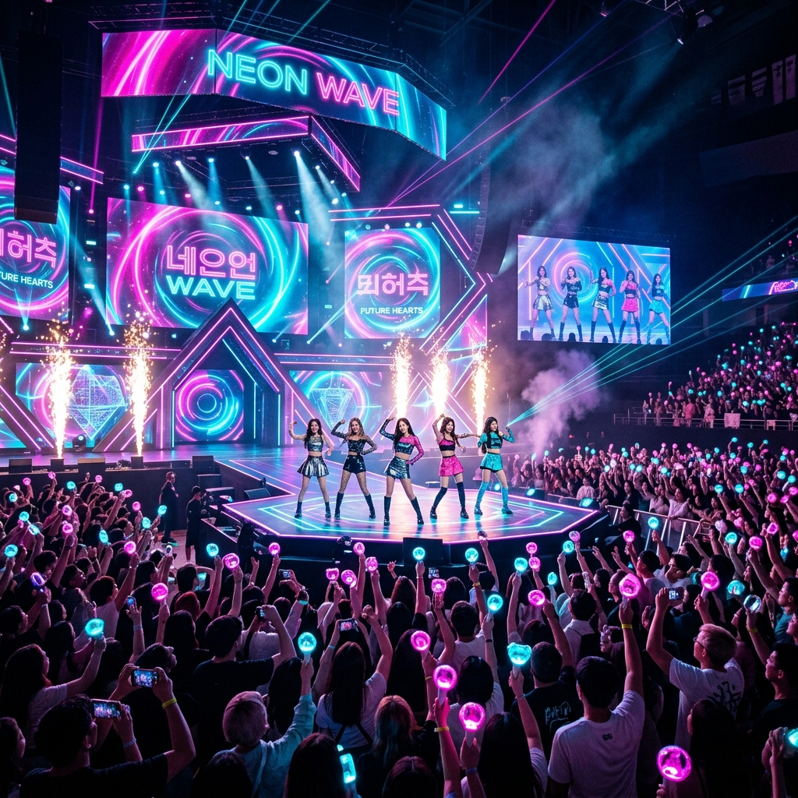
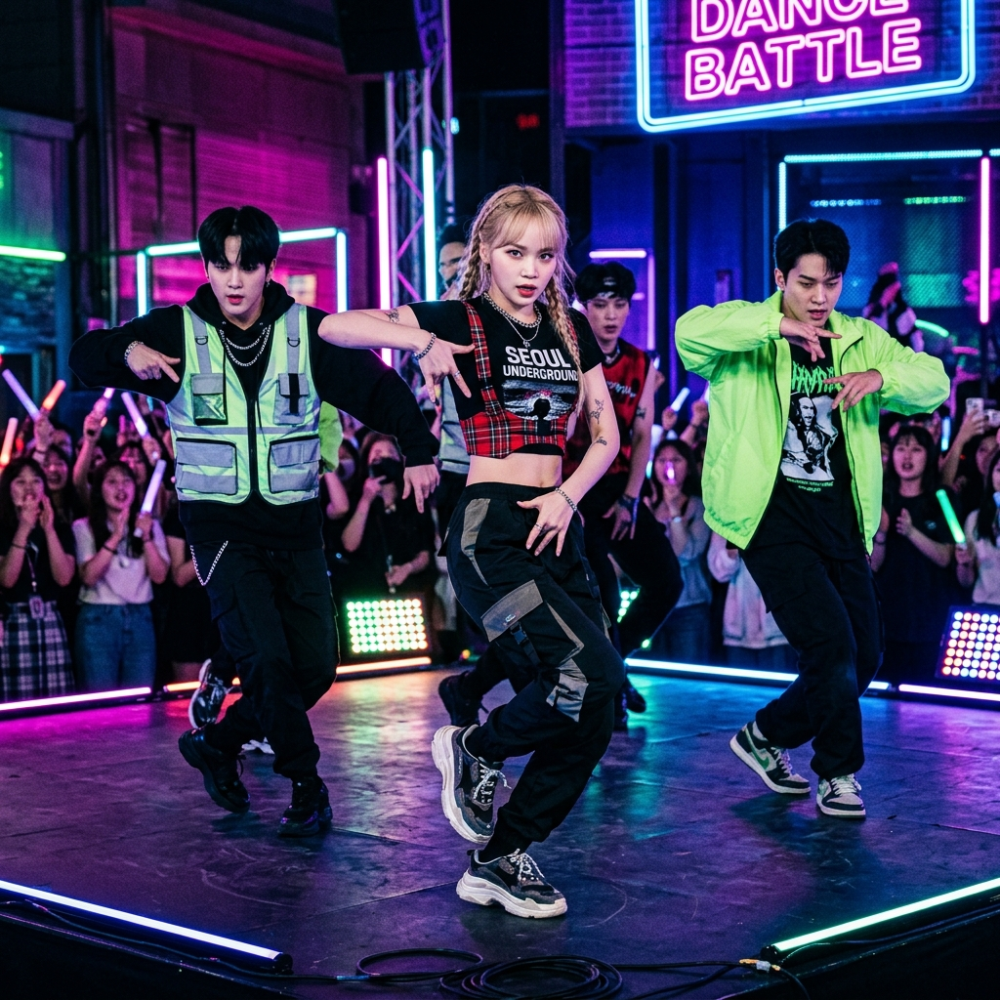

Global Phenomenon
THE ART OF
K-POP
전 세계를 매료시킨 강렬한 리듬, 눈을 뗄 수 없는 퍼포먼스. 대한민국의 열정이 빚어낸 새로운 문화의 정점, K-pop의 세계로 당신을 초대합니다.

문화적 혁명을 주도하다
K-pop은 단순히 한국의 대중음악을 넘어, 패션, 기술, 그리고 글로벌 팬덤 문화가 집약된 종합적인 예술 플랫폼입니다. 매년 전 세계 수백만 명의 팬들이 K-pop을 통해 서로 소통하고 꿈을 키우고 있습니다.
Visual Music
듣는 즐거움을 넘어 보는 즐거움까지. 화려한 뮤직비디오와 비주얼 스토리텔링의 정점을 보여줍니다.
Performance
오랜 기간 훈련된 아티스트들의 완벽한 군무는 K-pop의 가장 큰 차별점이며 매력 포인트입니다.
Global Fandom
국경을 초월한 강력한 팬덤 문화는 K-pop이 세계 무대에서 살아 움직이게 하는 원동력입니다.
시대를 앞서가는
새로운 물결
당신도 이 글로벌 혁명의 일부가 될 준비가 되었나요? 지금 바로 K-WAVE 커뮤니티에 합류하세요.